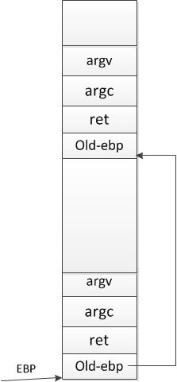

<html>
<head><meta http-equiv="Content-Type" content="text/html; charset=utf-8">
    <title>Lab 1: Buffer Overflows</title>
    <link rel="stylesheet" href="../labs.css" type="text/css">
</head>
  

<body>
    
<table width="100%" >
      
<tbody>
<tr>
<td>
<h1>Lab 1: Buffer Overflows</h1>
<hr>

<h3>Lab Overview</h3>
<b>Important Note:</b> This course's labs, including this lab, 
ask you to design exploits and to perform attacks. These exploits
and attacks are realistic enough that you might be able to 
use them to perform a real-world attack, but you should not
do so. The only goal of the designing exploits is to teach you
how to defend against them, not how to use them to attack 
others---attacking computer systems is illegal and can get
you into serious trouble. Don't do it.
<p>
You will do a sequence of labs in this course. These sequence
of labs will give you practical experience with common attacks
and counter measures. These labs consist of the following:
<ul>
<li>Lab 1: you'll understand the principal of buffer
overflows and will understand how such attacks happen
in real-world application (say, a web server);
<li>Lab 2: you'll explore return-oriented programming (ROP)
techniques, these techniques are widely used on systems
with non-execution protections;
<li>Lab 3: you'll study privilege separation, when one component
of a computer system is wrecked, the whole system
will not crash;
<li>Lab 4: you'll design and implement a simple intrusion 
protection system (IPS).
</ul> 

<p>
This is lab 1, in this lab, you will study the basic
principal of buffer overflows and then use this knowledge
to attack a real-world application: a web server. Finally,
you'll fix the buffer overflows by patching the source code.

<h3>Software Setup</h3>
<p>
You should finish all labs on the Linux OS we given, so you
should first install the Ubuntu OS listed on the 
<a href="../../references.html">tools</a> page. Especially, you
should download and install
<a href="http://128.230.208.57/SEEDUbuntu12.04.zip">the Ubuntu 12.04</a>.
(Download this software to your machine and unpack it
into some directory.)
Important note: install the OS in a virtual machine (say,
VMWare), instead of on your bare machine, or else the
attack may bite yourself.

<h3>Getting Started</h3>
We've offered some code here to start with. Download
<a href="lab1-code.rar">this
code</a> to your machine and unpack it into some directory.
      
<h3>Lab Requirement</h3>
There are two kinds of exercises: normal exercises and
challenge ones. Challenge exercises may not
be that hard, but may involve substantial code hacking.
You are required to do ALL normal exercises.
All challenge exercises are optional (but you're encouraged
to try them).

<h3>Hand-in Procedure</h3>
When you finished your lab, zip you solutions and submit to the
<a href="http://mis.sse.ustc.edu.cn/default.aspx">school's
information system</a>.
      
<h1>Part A: Buffer Overflow Principal</h1>
<p>
In this part of the lab, you will study the basic principal of buffer
overflows, and then you will study how to use buffer overflows
to attack a simple vulnerability  program, 
some basic theorem will assistant you to realise the goal.

<p>  
Now, you should browse the source code we given and find out
the file <code>stack1.c</code>. There is a simple C program
in this file, which has buffer overflow vulnerability. You can
compile this program using the <code>gcc</code> compiler:
<pre>
    $ <kbd>gcc -g stack1.c -o stack1</kbd>
    $ <kbd>./stack1</kbd>
</pre> 
note the use of the <code>-g</code> parameter, which will 
be useful when you debug the executable using gdb.

<h3>Stack Layout and Buffers </h3>
In computer science, a
<a href="http://en.wikipedia.org/wiki/Call_stack">call stack</a>
is a stack-like
data structure holding information to control function
calls and returns. Stack layout is the convention on how
the stack frame is used. As an example, read
the simple C program given you (the C file <code>stack1.c</code>).
<!--
<pre class="tty">
void func(char *str){
  int variable_a;
  char buffer[12];

  /* print the address of array buffer.
   * your code here:
   */

  strcpy(buffer,str);
}

int main(){
  char *str = "less 12bytes";
  func(str);
}
</pre>
-->
<p>
When the function <code>main</code> calls the function
<code>func</code>, the stack layout looks like the
following, pay special attention to the positions
of the local variables and arguments.
<pre class="tty">                
                     +------------------+ high address
                     |       ...        |
                     |  stack frame of  |
                     |   main           |
                     |       ...        |
                     +------------------+
                     |  str(a pointer)  | (4 bytes)
                     |  return address  | (4 bytes)
           %ebp----&gt; |    saved %ebp    | (4 bytes)
                     +------------------+
                     |       buf[11]    |
                     |       ...        | (12 bytes)
            buf----&gt; |       buf[0]     |
                     |     variable_a   | (4 bytes)
                     |       ...        |
                     +------------------+ low address 
</pre>
</p>

<p>&nbsp;</p>

<div class="required">
<p><span class="header">Exercise 1.</span>
Now, you can write some code. Your job is to
print the address of the variable 
<code>buffer</code>, in the C program <code>stack1.c</code>, 
and compile the C program as above. Run it three times, 
observe and write down the output addresses in <code>address.txt</code>,
are these 3 addresses the same or not? 
</div>

<div class="challenge">
<p><span class="header">Challenge!</span>
Read the file <code>/proc/pid/maps</code> on your machine
(pid is the process id), observe the value of 
<code>[stack]</code>. You can read <a href=
"http://securityetalii.es/2013/02/03/how-
effective-is-aslr-on-linux-systems/">this article</a> 
to learn how effective the ASLR on Linux systems is.
</div>

Now you can investigate the stack layout and C calling
convention in detail, for this, you should use the debugger
<code>gdb</code>. In this and future labs, you will 
use <code>gdb</code> heavily. 

<div class="required">
<p><span class="header">Exercise 2.</span>
Use <code>gdb</code> to debug the program, as the following.
You may find the online
<a href="http://www.sourceware.org/gdb/current/onlinedocs/gdb/">gdb manual</a> useful.
<pre>
$ <kbd>gdb stack1</kbd>
(gdb)<kbd> b  func </kbd>
Breakpoint 1 at 0x8048412: file stack.c, line 8.
(gdb)<kbd> r </kbd>
Starting program: /tmp/stack1
8	  strcpy(buffer,str);
(gdb)<kbd> info r </kbd> 
eax            0x80484e8	134513896
ecx            0xbffff504	-1073744636
edx            0xbffff494	-1073744748
ebx            0xb7fc8000	-1208188928
esp            0xbffff410	0xbffff410
ebp            0xbffff438	0xbffff438
esi            0x0	0
edi            0x0	0
eip            0x8048412	0x8048412 <func+6>
eflags         0x282	[ SF IF ]
cs             0x73	115
ss             0x7b	123
ds             0x7b	123
es             0x7b	123
fs             0x0	0
gs             0x33	51
(gdb)<kbd> x/2s 0x80484e8 </kbd>
0x80484e8:	 "I am greater than 12 bytes"
0x8048503:	 ""
(gdb)<kbd> p &buffer </kbd>
$1 = (char (*)[12]) 0xbffff424
(gdb)<kbd> x/4wx 0xbffff424 </kbd>
0xbffff424:	0x08048320	0x00000000	0x080482bd	0xb7fc83e4
(gdb) <kbd>x/8wx $ebp </kbd>
0xbffff438:	0xbffff468	0x08048443	0x080484e8	0xbffff504
0xbffff448:	0xbffff50c	0xb7e54225	0xb7fed280	0x00000000
(gdb) <kbd>x/2i 0x08048443 </kbd>
0x8048443 <main+29>:	leave  
0x8048444 <main+30>:	ret    
(gdb) <kbd>disass func </kbd>
Dump of assembler code for function func:
0x0804840c <func+0>:	push   %ebp
0x0804840d <func+1>:	mov    %esp,%ebp
0x0804840f <func+3>:	sub    $0x28,%esp
0x08048412 <func+6>:	mov    0x8(%ebp),%eax
0x08048415 <func+9>:	mov    %eax,0x4(%esp)
</pre>
</div>

<h3>Address Space Layout Randomization</h3>
In order to protect against buffer overflows, most
recent operating systems introduce many protection mechanisms, among
which the most important one is address space layout randomization (ASLR).
Basically, in a system with ASLR, the starting address of the
heap and the stack, along with other segments, will be
randomized, so it's will be difficult for the attack
to know or guess the specific address of any memory
segments, say the stack. Here is <a href=
"https://en.wikipedia.org/wiki/Address_space_layout_randomization">
a brief introduction</a>, in lab 2, you will study ASLR
in detail and learn how to defeat ASLR. For the purpose of this lab, you
should simply turn off ASLR (in lab 2, you'll perform attacks
when ASLR is effective), which will make your attack
easier to achieve. To turn off ASLR, you can run
these commands:
<pre>
  $ <kbd>su root</kbd>
  Password : (enter root password)
  # <kbd>sysctl -w kernel.randomize_va_space=0</kbd>
</pre>

<div class="required">
<p><span class="header">Exercise 3.</span>
Turn off the address space layout randomization, and then do
exercise 1 again, write down the three addresses in 
<code>args.txt</code>, are those three addresses same
or not?
</div>

<h3>Buffer Overflow and Shellcode</h3>
A <a href=
"https://en.wikipedia.org/wiki/Buffer_overflow">buffer overflow</a>
occurs when data written to a buffer 
exceeds the length of the buffer, so that corrupting
 data values in memory addresses adjacent the end
of the buffer. This often occurs when copying data
into a buffer without sufficient bounds 
checking. You can refer to Aleph One's famous article
to figure out how buffer overflows work.

<p>
Now, you run the program <code>stack1</code>, just like below.
<pre>
   $<kbd> ./stack1 aaaaaaaaaa</kbd>
   Returned Properly
   $<kbd> ./stack1 aaaaaaaaaaaaaaaaaaaaaaaaaaaaaaaaaaaaaaaaaa</kbd>
   Segmentation fault
</pre>
If you don't observe <code>Segmentation fault</code>, just
increase the number of the input <code>a</code>s. Here, the message
<code>Segmentation fault</code> indicates that your program
crashed due to invalid memory access (for instance, refer to
memory address 0).

<div class="required">
<p><span class="header">Exercise 4.</span>
Use <code>gdb</code>, to print the value of the register
<code>%eip</code> when the program crashes. How does the
program run to this address?
</div>

<div class="challenge">
<p><span class="header">Challenge!</span>
Try to write a C program which prints every
return address in the call stack until the
invocation of the current function. This is often 
called <a href="http://www.gnu.org/software/libc/manual/html_node/Backtraces.html">a
backtrace</a>. This behaves like
the <code>bt</code> command in the <code>gdb</code>.
Hint: just as the following picture shows, the stack
is simply a list with <code>%ebp</code> as the <code>next</code>
pointer.<br>


</div>

You can overwrite the return address with any valid
address, instead of eight <code>a</code>s (0x61616161).
Interestingly, you can supply the starting address of the current
buffer being overflowed, whose address has been studied in
exercise 1. More interestingly, if the buffer contains
some binary code, that code will be executed. Any binary
code can be supplied, especially, Alpha One offers
a binary code to pop a shell, so this kind of binary
code is often called
<a href="http://en.wikipedia.org/wiki/Shellcode">shellcode</a>, although
such kind of binary code can do much more interesting things (attacks).

<p>
Now compile the supplied C program <code>test-shell.c</code>,
and run it to pop a shell.
<pre>
  $ <kbd>gcc -z execstack test-shell.c -o test-shell</kbd>   
  $ <kbd>./test-shell</kbd>
  sh-3.2$ <kbd>id</kbd>
  uid=1000(seed) gid=1000(seed) groups=4(adm),20(dialout),24(cdrom),
  46(plugdev),106(lpadmin),121(admin),122(sambashare),1000(seed)
  sh-3.2$ <kbd>exit</kbd>
  $ 
</pre>
The <code>-z execstack</code> option will mark the stack segment
executable, which you'll study in detail in lab 2.

<div class="required">
<p><span class="header">Exercise 5.</span>
The shellcode we offered can pop up a shell, Now it's your 
turn to attack the C program named <code>stack.c</code> 
using shellcode, you will get a shell if 
you succeed. You should compile and run your program
as follows:<br>
<pre>
   $ <kbd>gcc -g -z execstack -fno-stack-protector stack2.c -o stack2</kbd>
   $ <kbd>./stack2</kbd>
   sh-3.2$ <kbd>id</kbd>
   uid=1000(seed) gid=1000(seed) groups=4(adm),20(dialout),24(cdrom),
   46(plugdev),106(lpadmin),121(admin),122(sambashare),1000(seed)
   sh-3.2$ <kbd>exit</kbd>
   $ 
</pre>
Here, the <code>-fno-stack-protector</code> option will
disable gcc's
<a href="https://en.wikipedia.org/wiki/Stack_buffer_overflow#Stack_canaries">stack canary</a>. 
Hint: you can use the <code>gdb</code> when necessary, but keep in mind that 
there are some minor differences between the result from <code>gdb</code> and 
that from the stand-alone executable.
</div>

<div class="challenge">
<p><span class="header">Challenge!</span>
Write other kind of (more interesting) shellcode, do whatever
you want to do.
</div>


<h1>Part B: Buffer Overflows in the Touchstone Web Server</h1>
In this part of the lab, you will explore how buffer overflows
happen in real-world and how to exploit them. To make the
discussion concrete and realistic, you
will study a small web server called <i>Touchstone</i>. The
touchstone web server is realistic enough to serve static
pages (though you can extend it with other features),
and meanwhile small enough whose source code can
be studied very quickly. We have left some bugs and vulnerabilities
in the touchstone web server, some of which will be studied 
in this lab, whereas others will be studied in future labs.

<h3>The Touchstone Web Server</h3>
All the source
code for touchstone is stored in the code repository. Now compile
the touchstone web server and deploy it:
<pre>
   $ <kbd>cd web-server</kbd>
   $ <kbd>make</kbd>
   $ <kbd>./touchstone</kbd> 
</pre>
Open your browser to input this URL <code>http://127.0.0.1:8080</code>, you 
will get a simple "hello, world" page. If that fails,
try to re-run the web
server like as <kbd>./touchstone 8899</kbd>, and your browser 
URL should input <code>http://127.0.0.1:8899</code>. Contact us, if
you still have problems.

<div class="required">
<p><span class="header">Exercise 6.</span>
Study the web server's code, and look for code vulnerability 
which can be exploited to crash the server by buffer 
overflows, pay special attention to the file <code>parse.c</code>. 
Write down a description of each vulnerability
in the file named <code>bugs.txt</code>.  
<br/><br/>
For each vulnerability,
how you would construct the input (i.e., the HTTP request) 
to overflow the buffer,  Locate at least one vulnerabilities.
<a href="http://www.garshol.priv.no/download/text/http-tut.html">
Here</a> is a tutorial of the HTTP protocol, you can focus on
the GET request.
</div>

<h3>Attack the Web Server</h3>
Even though the vulnerability has been detected
in the web server, it's still difficult for you to
crash the server, because your browser will do most
of the dirty work for you that you can not control, that is,
you can only do good things with such a browser.
So, as a hacker, you have to write your own browser from
scratch. We have offered you a simple browser in the 
file <code>browser.c</code>, basically, this browser will
construct an 
http request and then send to the web server, waiting for
the server's response. The browser is simple enough that
is does not come with an html render, however, it's not
difficult to add an html render engine and a UI to make
it more realistic. In fact, there are many
open source html render engine, say webkit. You are
encouraged to do so, if you're interested in.

<div class="required">
<p><span class="header">Exercise 7.</span>
For the buffer overflow vulnerability you've found, 
construct an input to send to the touchstone web server, your goal
is to crash the web server (the http server daemon).
Note: if you're successful to crash the web server, your browser 
will remain dead-waiting to receive data from the 
server. Don't forget 
that any valid request must end up with <code>\r\n\r\n</code>.
</div>

Crashing the web server is just the first step, now you should try to 
do some thing interesting, say, to delete some sensitive 
files (for example, the <code>grades.txt</code>). 
To start with, you can use
the program <code>create-shellcode.c</code>,
to construct your shellcode, 
you may have to modify the file according to your need. And you
can copy your
shellcode to the C program <code>test-shell.c</code>.

<div class="required">
<p><span class="header">Exercise 8.</span>
Perform your attack by constructing an exploit that hijacks control
flow of the web server and unlink (delete) <code>grades.txt</code>. 
Remember that the web server is on your computer,
so you should create a file named <code>grades.txt</code> first.
</div>

<!--
<div class="challenge">
<p><span class="header">Challenge!</span>
we also offered you one remote web server,you can browse it
by <kbd>http://219.219.220.220:8090</kbd>,
and then you can attack our server, it is a little difficult, 
you can not  debug the server. If you are interested in attacking, 
spare no efforts to try it.
</div>
-->

<div class="challenge">
<p><span class="header">Challenge!</span>
Write a <a href="http://en.wikipedia.org/wiki/Shellcode#Remote">
remote shellcode</a>, so that you can gain control of 
a remote machine.
Remote shellcode is used when an attacker wants to target 
a vulnerable process running on another machine on a 
local network or intranet. If successfully executed, 
the shellcode can provide the attacker access to the target
machine across the network. Remote shellcodes normally use 
standard TCP/IP socket connections to allow the attacker 
access to the shell on the target machine. 
Such shellcode can be categorised based on how this connection
is set up: if the shellcode can establish this connection, 
it is called a "reverse shell" or a connect-back shellcode 
because the shellcode connects back to the attacker's 
machine. To bypass the firewalls, you can use
the <a href="http://www.blackhatlibrary.net/Shellcode/Socket-reuse">port
reuse</a> techniques.
</div>

<h1>Part C: Fixing buffer overflow </h1>
The source of buffer overflow vulnerability comes from 
the web server's source code, so you should realize
the importance to write secure code from the first place,
though it's, nevertheless to say, not easy. For the
specific buffer overflows in this lab, you can fix
buffer overflows relatively easily by modifying the
source code. If you can not gain access to the source
code, say your Windows has a buffer overflow (that's
often the case), you
will have to wait for M$ to publish a security update.

<div class="required">
<p><span class="header">Exercise 9.</span>
Try to fix the buffer overflow vulnerabilities of the
touchstone web server. You can use whatever techniques
to achieve this, say use safe string copying function
<code>strncpy</code> or to allocate the buffer in
the heap but not on the stack. And re-do the attack,
observe whether or not your attack will succeed.
</div>

<h3>Handin</h3>
This completes the lab. Remember to hand in your solution to 
the information system.

</td>
</tr>
  
</tbody>
</table>


</body>
</html>
